This is the cooling pack I was talking about here. The spirit of improvising would not continue for generations without the existence of The Greatest American Invention of All Time:
Duct tape.
I suggested we use a strong cloth tape to close seams, and make tab of same. It worked fine, I showed it to different government inspectors they said it was all right, but I could never get them to change tape.
Vesta Stoudt, inventor of duct tape, writing to Franklin D. Roosevelt in 1943[1]
The greatest use of duct tape has to be in fitting a square peg into a round hole on the Apollo 13 mission. May it have infinitely useful uses in many years to come.
I visited the Johnson Space Center in July to particpate in their Space Center U program, and it was a blast to be a part of!
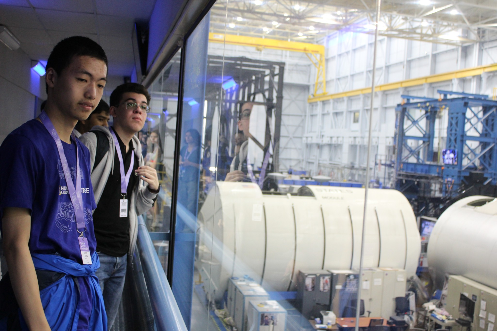
Johnson Space Center
In the Astronaut Training Facility, where there is a life-size mockup of the International Space Station
Space Center Houston Museum
A outer shell model of the Orion space capsule
Space Center Houston Museum
The Independence Space Shuttle on the back of the Boeing 747-100 Shuttle Carrier Aircraft N905NA
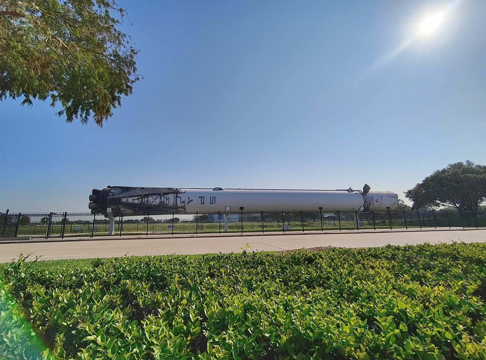
Space Center Houston Museum
The first Falcon 9 rocket that SpaceX ever launched. You could still see the burn marks!
Space Center Houston Museum
And the rocket engines closeup!
One of Rice University's Libraries
Rice University Stadium
This is where JFK said "We choose to go to the Moon. We choose to go to the Moon... We choose to go to the Moon in this decade and do the other things, not because they are easy, but because they are hard."
Rice University Campus
Hurricane Beryl had a field day.
We left the Moon almost 50 years ago, and we never made it to deep space, "beyond the dark side of the Moon". This place is where the future of humanity lies, and where we will first learn to touch the stars.
Artemis and the human Mars missions, we're coming!
The battery swap experience goes public! Once again, feel free to leave any questions or interesting thoughts through the comments on videos on my channel (@Hands-OnDeck)!
I've biked to school almost every day throughout my high school life. However, afternoons of biking home in the pouring rain have finally snapped the bike's left pedal. It seems even plastic can't survive forever.
Ordering new bike pedals weren't a big issue, though it turns out there exist two different standards of pedal size: 9/16" and 1/2", and going from one to another requires an adapter. No, the glaring issue is that after so long, the nut and bolt just wouldn't come apart!
No matter what I tried, pushing and pulling with various tools, the nut refused to budge and come out (it also had only two flat sides, one on top and one on the bottom, meaning a hexagonal wrench much less area to work with). It was almost as if someone took a blowtorch and literally melted the two metal pieces together. So, it seems we need to try something unconventional.
Firstly, the new pedals that I bought already had a central axis of rotation, so I didn't have to reuse the one that the bike came with: I just cut it out with a metal cutter. Then, I used a metal grinder to make a hexagonal shape and cut out four planes around the curved surface. It was a very noisy thing, but in the end I got it to the correct shape and size such that a 5/8" socket could fit on.
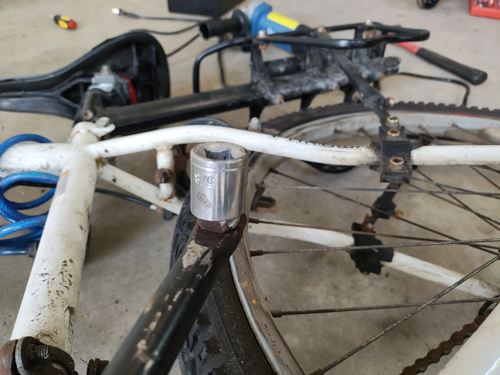
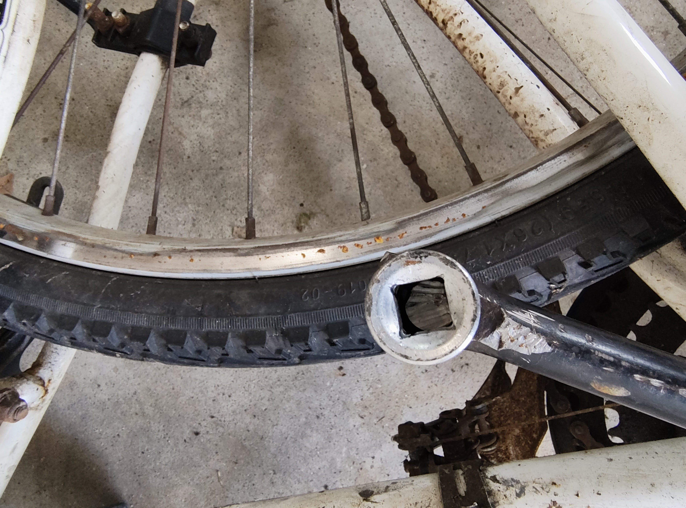
Even after this, using a 5/8" socket with torque wrench, the thing still didn't budge, and the outside socket began slipping. So, it was time to go for an even smaller socket of 9/16". And this time, I used the impact wrench.
While the battery has not been bought yet, I do need to start thinking about how it would be possible to remove the original battery out of the car, when the ground clearance is only 6" and the entire battery is at least a foot tall. I could lift the entire car like in those typically car mechanic shops, but I don't want to do that. Jacks on the ground also can only lift the car by so much. Either way, this cheap liftable table would work fine, except that it doesn't have any wheels to pull the battery out once I've removed it.
The next step in the process is to replace the battery of the 2012 Nissan LEAF. Unfortunately, several problems are still unresolved at the moment.
The goal of replacing the battery is not just to make the car itself run longer—it's to make a point about reusability. If all humans on Earth magically switched to their favorite electric vehicle and we all stopped polluting CO₂ into the atmosphere, there is still the question of waste. It's clear that we shouldn't have to just dump the battery simply because it doesn't work for a car—it could very much work for us in other ways. A stationary power source conserves many more resources and is better in the long run than just returning it to the factory or buying another car.
Now, how do we give this 24 kWh battery a second life? We first have to get the new battery here. This has been quite the hurdle so far.
Here's a brief table explaining the different battery capacities that the Nissan LEAF has had over the years. Hover on anything underlined to learn more. (Note that S, SV, and SL stand for Series, Series Value, and Series Luxury, supposedly.)
The best car batteries out in the market so far have only been around since 2019, and very few of them would likely need to be replaced at this moment. To check, I called 6 junkyards all around my region, but not one of them had a single Nissan LEAF that was even wrecked, much less one that had a spare 62 kWh traction battery lying around. After I looked on Reddit to see if others have walked down my path in the past before, it made more sense—there were cross-country deals going on, simply because there was so little supply.
At this point, I must thank Jack, who worked at one of the junkyards nearby and directed me to Nationwide Auto Recycling and recommended that I check on auto parts online (something that I had never really known was a thing). Checking every so often led me to a $7000 battery, still intact from a totalled 2019 model. Since the ones on QCCharge asked for $500 more, this seemed like a great deal. I was about to make the call when I checked the VIN number and realized it was not a Plus model. Defeated again.
Even despite numerous attempts to find other parts online, there didn't seem to be anything coming in. And so I thought for a few days about how I would proceed.
While scrolling through YouTube Shorts a few days later, I found a few videos from a few companies specializing in lithium-ion battery manufacture, all based around Shenzhen, with corresponding WhatsApp numbers. These companies would prepare separate units and then combine them into packages so that the total output would reach 63 kWh, and the entire box could be shipped anywhere worldwide. As of right now, I'm currently analyzing prices and seeing whether or not I can get something out of this. We'll have to see how this turns out. But in either case, if you happen to find a 62 kWh Nissan LEAF battery lying around, I could use it.
For the past few months, a persistent squealing and screeching sound growling louder and longer whenever the Sienna starts. (You can hear it here when I'm trying to see if the battery will start.) My mom complained that it was getting very annoying, so it was up to me to see what could be done. Like many problems, it was initially difficult to pinpoint where the squealing noise exactly came from, but as a rule of thumb, always start with the easiest thing to check and fix.
That would be the serpentine belts, probably either the one connecting the alternator/generator, the A/C compressor, and the crankshaft pulley, or the one connected the crankshaft pulley and the power steering. These belts can loosen and potentially create the noise heard. Among the two belts, no doubt the first choice would be to start from the higher belt (the one connecting the alternator and A/C), since it would be much easier to reach and deal with in the event that it was in fact responsible. Two theories were plausible explanations for creating noise:
The ridges on the inside of the belt were worn out and had breakages in between
There was not as much tension on the belt after so many years of use and it would slip on the pulley during a cold start
Upon examination, the belt was having trouble turning the crankshaft pulley, only making it turn and having the sound die down. The sound could last as long as two to three minutes after ignition and could get even worse when the temperature was low or when the fan was on. Rubbing the back of the belt didn't seem to indicate that the ridges had broken.
A simple trick to check the tension of these belts in general is to see whether or not the belt can be twisted 90° at the middle section of its longest span. When I tried this, I was able to turn the belt almost 180° and noted the ridges seemed to be pretty okay as well, with not too much wear. It seemed we were dealing with something near the domain of theory 2.
Below is a diagram of the serpentine belt.
Screws A (14 mm) and B (12 mm) would have to be loosened and only then could screw C (also 12 mm) be used to adjust the tension.
When I put my wrench to the screws, the 17 years of the car made it very clear that they really did not want to be loosened. An application of WD-40 did not change this fact at all, so I made my way to my torque wrench, which gave me a longer arm as a breaker bar.
However, the head of the torque wrench was too big to fit into the car's space. Because both sides of the torque wrench had a size of 1/2", a 1/2" to 3/8" chrome vanadium adapter was needed to get my 14 mm or 12 mm socket in place, adding to the size when I only had 6 cm of clearance. After a long time struggling, it seemed the only solution was to use a joint socket with a head short enough to fit in that space.
One trip to AutoZone store, $2.99, and 24 hours later, I had my 3/8"-sized joint socket in hand.
The biggest problem with this job was that because of the sheer number of wires and pipes in the way, I had to wrangle the torque wrench in and out the space at every given turn—I only had about 60° of rotational space to work with. What's more, due to the design of the joint socket (in that it finds the easiest way for it to rotate), some arrangements of the entire wrench mechanism were unable to effectively attach to screw A or B and then turn it. Thus, I had to take the joint socket off, rotate it 90°, and see if I could now the wrench could fit and create the torque I needed. This took a lot of time and effort to visualize. (Also interesting to note, and important if you do this in the future—using a joint socket prevents you from taking a torque reading if you use a wrench like that one I did—it simply becomes a bar that you can push and rotate in the plane perpendicular to the bar of metal with all the number readings. A click type is better.)
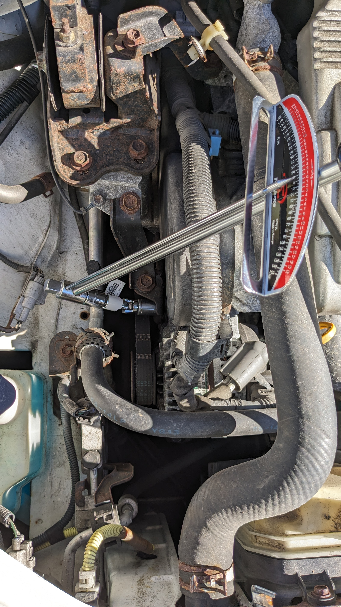
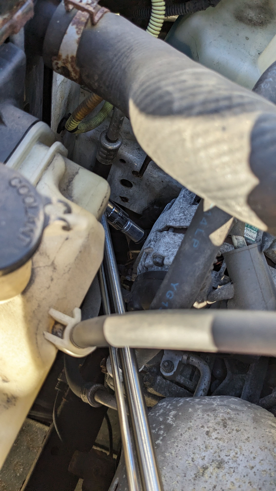
Eventually, I got both screws A and B loosened (with more WD-40 encouragement and using the smaller 1/4" wrench once the screw started to turn). I started to loosen screw C just to make sure it was working. Sure enough, the belt was getting looser. Good. I then retightened screw C and rotated it about 20 times (also with only about 60° of rotational space, so roughly 3.3 full rotations), checking every so often how much I could rotate the belt. Finally, it was sufficiently tight (90° turn) and I tried my best to retighten screws A and B, even though I had to estimate the amount of torque and try to make it match manual specifications.
Here is starting the car, this time, squeaking vaporized.
And one more time, up close.
Overall, the entire process of loosening and tightening three screws cost about 5 hours spread over 2 days, oil-greased hands, and one small scratch on my right pinky. But I'm happy it's not something worse, and that it was addressed before it got worse.
It seems that new models with an automatic tensioner are less likely to have this problem, but at the same time, when the tensioners do break, they would be harder to service. Fortunately, Toyota is well-known for quality control and friendly servicing.
My family has a 2012 Nissan LEAF, a blue one that has been with us for some time as well. It also has some problems: the on-board charger, effectively a rectifier (AC to DC) that allows the battery pack to charge, has some problems, and the central screen of the car has malfunctioned (the flippling mechanism), causing a parasite current when the car is parked.
I have the same screen issue as this and similar OBC problems as here, here, and here, but I will have to dig deeper.
This vehicle was part of the first generation of mass-produced electric cars, years before the Tesla Model X first hit the streets—this car in particular was one of the earliest in my town, back when I was 6 years old.
A bit of a personal touch—my dad told me that he wished that I would learn to drive using this car, and I finally got a go with it on my 16th birthday in an empty parking lot.
Since there are some problems with it now, my parents promised me that if I could get the car fixed, it would be mine. As such, I am endeavoring to fix it, upgrade it, and recycle the old battery for use as our home's backup battery supply.
One day, the car that my mom drove refused to start. Since it was an old car, I guessed that the battery voltage was likely too low.
I lifted the hood and pulled the lead-acid battery out and took it into the garage to charge overnight. The next morning, the voltage was about 13.8 V, which seemed pretty good for being nearly three years old.
In the afternoon, I checked the voltage again and it was now at 12.5 V. Upon returning to the car, the voltage lowered a bit to 12.3 V. Trying to start the car again did nothing.
It is possible that the starter and/or the alternator could have problems. The electric starter is what initiates the internal combustion engine and that is the spark that one hears as the car is failing to start. Alternators convert mechanical energy to electrical energy with alternating current (go figure), and it's actually used to recharge the battery and power the rest of the car's electrical system while the engine is running. (Interestingly, before the 60s, most ICEs used commutators instead.)
Upon attempting the start the car again, this time with the multimeter in place, I saw the voltage quickly drop down to 8 to 9 V. It is also possible then that the battery is unable to provide enough current to start the car.
It seems that the only way to be sure of the root of the problem is to use another lead-acid battery to confirm whether or not it's the old battery's problem (and I suspect that it is). We shall see.
Battery on the ground
About 8 hours after disconnect from a full charge
Placing the battery in the car
Before the car starts, it showed a relatively stable reading
After a decade of use, the first generation of mass-market lithium-ion battery-powered household electric passenger cars have successfully met the needs of users and basically achieved all of the original design goals. More importantly, these autos have provided valuable experience for the design and manufacture of electric vehicles (EVs) and promoted the full popularization of electric household passenger cars. This car is still very convenient as a local short-distance daily transportation tool. For longer-term use in the future, a reasonable solution for a power battery replacement is needed. This is also an important structural problem in the current development of electric vehicles, which requires more research. (There are relatively reliable structural ways for dealing with the recycling and continued use of traction batteries, which currently need more extensive and powerful practical promotions.)
I would like to emphasize once again that if the aforementioned technical research cannot achieve structural results as soon as possible, electric vehicles will be replaced or reused like internal combustion vehicles until they are scrapped, which will lead to great waste. Except for the traction battery, the working life of the other systems on electric vehicles is much, much longer than that of internal combustion vehicles.
Postscript: Public health statistics in the United States show that the number of deaths from carbon monoxide (CO) poisoning caused by prolonged heating in internal combustion passenger cars remains high every winter, and remains more common in the cold, northern states. Likewise, for a long period of time, carbon monoxide poisoning by household heating or from the exhaust gas from ICE cars in closed passenger compartments or garages remains by far a very common method of suicide in the United States each year. This is very uncommon in other parts of the world.
As electric vehicles become more popular, this phenomenon and this method will hopefully be gradually reduced.
Due to the high cost of the first generation of electric vehicle traction batteries, energy conservation became the core issue of the design process: saving energy using all available methods remains still an important consideration today. Among all methods, the tires and the shape of the automobile have become two important research areas not previously paid much attention to in the pre-EV era.
Tires
The main directions of innovation for the tires are reduction of weight and reduction of friction. BMW experimented with a "carriage tire" (see here for an image that explains what that means), as decreasing surface area in contact with the ground tends to reduce friction.
EVs have allowed for many innovations in tire design. For example, the heavy battery leads to a lower center of gravity (and therefore higher stability), which leads to a relaxed active and passive control of the vehicle's balance. Still, as mentioned above, the suspension system should consider strengthening actions, which also requires higher load-bearing requirements on the tires. The best option would be a balance between these two factors, likely further supplemented through innovations of materials.
This 2012 Nissan LEAF has a thin, light tire design made of a harder rubber. While its efforts to maintain tire width and improve load-bearing are laudable, it has problems with significantly accelerated tire wear, greater damage possibilities, insufficient repair strength, and negatively affected mileage. Over the 10 years that this car has been in use, the tires have been twice completely replaced and three out of the four tires have twice been completely replaced. Each time, accidents or age wearing the tires away were the culprits, but they all happened when the mileage was far less than the tire warranty's mileage limit of 70,000 miles. Still, this issue does need some more research.
General appearance
The foremost importance of realism and functional aesthetics in the EV field remains true to this day. Many years ago, it was proposed that no car that was not blown through a wind tunnel could be called an electric car, emphasizing the importance of energy saving in passenger car design. This still has not changed.
The 2012 Nissan LEAF specifically has these implementations in mind, and for the most part, the wider traditional passenger car design community dislikes this. To maintain traditional fields of view from the driver's perspective, the headlights were designed to be upward, convex, and streamlined. Additionally, to reach a more compact design, the curved surface of the trunk door and the integration of a rearward spoiler have led to great inconveniences and complaints for users.
On the other hand, the 2nd Gen Tesla Model S took a different approach: they retained the original headlight shape, but chose to significantly reduce the angles of the front and rear windshield gradients by extending the front and back of the passenger compartment (that is, lengthening the car to decrease the slope of the surface). They also chose to retain the rear hatchback design but removed the rear spoiler. The design community, despite mentioning several problems with the rear door, was mostly happy with these changes.
Both of these different directions of design deserve full recognition. While the customer experience is the starting point for most manufacturers, energy saving requires transcending these problems and as the latter is the starting point for the very existence of these autos, it should be something strongly adhered to.
Still, it is likely that reality will go in a different direction. As the cost of the traction battery falls and supply increases, the language of appearance will be the most important part of future ICEs. This position reflects not only a adaptation of manufacturers to the forces of the market, but also the renewal of cultural and aesthetic ideas in line with the needs and wishes of technological development—the latter tends to adapt to the former.
The 2012 Nissan LEAF was replaced several years later, with these very unique design factors removed, returning to the original and traditional design mode of appearance. Still, this made this original model important in its very unique milestone in the history of the development of EVs.
It was believed that after the century-long development of the ICE car that greatly contributed to better understanding of automobile mechanical technology used in automobiles, knowledge would be sufficient to make the mechanical transformation to electric, and the primary devotion would need to be on the power system. It turns out that during this most recent decade and the one before, this hypothesis has been pretty valid—the weakest area of the EV industry is still in the power system. Still, there are some problems in the mechanical designs that took us by surprise.
The suspension system
Suspension refers to the system of "cushions", such as the tires and shock absorbers that ties the frame of the vehicle to its wheels. The design of the suspension for ICE cars tends to be mostly the same because the distribution of the weight is the same—it is now settled for the most part that the weight should be either in the front of the vehicle, where the engine is located, or in the back of the vehicle, where a more complicated mechanical design is needed. Most traditional car companies make cars with front-wheel drive, primarily for safety reasons (reducing the chance of a flip). This setup meant the engine was effectively pulling the rest of the vehicle forward.
After the arrival of the electric vehicle, innovative companies were excited to begin using a rear-wheel drive approach (it helps with terrain, it's more balanced, better traction, etc.). However, the addition of an incredibly heavy battery underneath the car threw our previously established setup out of the window. Due to the sheer density and weight of the large traction battery under the car, a upper-lower weight distrubution analysis proved to be more useful than a front-back approach.
As the heaviest component of the entire vehicle, weighing in at around 900 lb (400 kg), the lithium-ion battery's only possible and resonable location is under the floor. While this improves stability (it isn't generally safe or sensible to be carrying top-heavy loads in life), this means that over longer periods of time, the suspension would have to deal with a constant downward push by the heavy battery. Given the clearly novel situation, it seems reasonable to advocate for a complete overhaul of the suspension system. It would be necessary to strengthen the front of the car for front-mounted electric motors or pay close attention to the back for rear-mounted electric motors.
The Nissan LEAF chose to stick with a front suspension, inheriting historical technology, now with some parts of the front suspension under greater stress due to the increased weight. While serious concerns for danger is largely minimal, problems could definitely reoccur here and it is worth ameliorating the increased strain in future designs. On the other hand, Tesla's suspension in particular also leads to problems elsewhere, such as in the running gear and the alignment. Although many different solutions have been tested (air suspension, adaptive automatic suspension, intelligent/real-time adjustment), the fundamental difficulties remain.
The brake system
ICEs rely on hydraulic and braking systems to do their job, but some were skeptical that these systems could be replicated in their function with electric vehicles. In recent years, such doubts have been erased—the electric braking system is far more reliable than hydraulic pipes.
Nevertheless, the initial high cost of traction batteries made it necessary for regenerative braking to become a vital baked-in feature for EVs, and it is now a permanent feature, even after the cost fell later on. It is quite important that this early emphasis on energy efficiency happened; it paves the way for greater economy in energy transfer. In fact, this also greatly reduces the working intensity of the braking system, meaning that the brake pads and discs that previously wore away incredibly quickly on ICEs can now last much longer, a definite benefit to traffic safety.
This current vehicle's regenerative braking system is still rather conservative. As of today (December 2023), the vehicle has had two brake pad replacements and one brake disc replacements, but the brake pads on the front of the vehicle have only been replaced once. In newer models, this system is even further enhanced, and the newest models can even do one-pedal driving.
Environment control of passenger compartment (heating and A/C)
While initially considered a difficult problem for EVs many years ago, the electrification of climate control is not a big issue in running electric vehicles today—it is, once again, saving electricity and maximizing energy efficiency. In this specific vehicle, it is one of the larger problems.
In ICE cars, the heating system directly relies on waste heat from the engine's exhaust gas, introducing it into the vehicle's interior, and warming the air. In electric batteries, there is no exhaust, and so a new heating method must be found. Designing such a method requires remembering conservation of energy. Nissan chose, for the LEAF, the most traditional method—harnessing the heat produced by a wire's resistance. Upon initial inspection, the energy consumption was too high for too little results, so resistance heating was added to the seats and the steering wheel. In practice, it was found that using this method for heating had a huge negative impact on performance because pushing hot air with fans is wildly inefficient. Nissan actually recommends that you use the seat warmers instead of the climate control's heat setting. Subsequent companies have learned this lesson and moved to a heat pumps with the seat warmers.
After the power scheme was electrified, the focus of innovative technology shifted from the narrower engine power to the broader power system—this encompasses the motor and the battery, and especially the latter with respect to its part as an energy system.
The vehicle uses lithium ion manganese oxide (LMO) batteries (which have lower chances of spontaneous combustion compared to other lithium ion batteries due to lower energy density), divided into 96 series units, each of which is composed of 4 flat, rectangular, single cells connected in parallel. These cells are air-cooled, but have no low-temperature battery heating protection. The battery management system (BMS) does not have any other temperature protection measures, only dealing with controlling charging and discharging.
So far, this may be the only electric car in mass production that utilizes natural air cooling. In terms of long-term operation, there are pros and cons. While Elon Musk has strongly "ridiculed" this model, this vehicle has never had a spontaneous combustion accident, in sharp contrast to the cars of Tesla and other car manufacturers. (One vehicle even survived a forest fire without the battery blowing up!) On the other hand, this format undoubtedly contributes to the long-term decay of the battery's capacity. While this specifically could be due to LMO's particular battery chemistry, there are also many reports of accelerated battery decay in high temperature regions (I wouldn't want to drive one of these in Phoenix during the summer). Thus, in recent years, the LEAF's cooling method has also become more active.
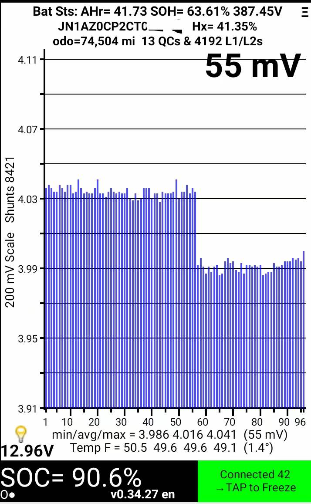
Based on the test charts shown above, it's clear that after 10 years and after almost 75,000 miles, the battery pack's capacity is about 63-65% of nominal capcity (that is, capacity out of the factory). Although this statistic exceeds the manufacturer's quality assurance requirements (the battery capacity would not be less than 70% after 5 years or 60,000 miles, whichever comes first), it is still slightly lower than this battery's expectations a decade ago—it was believed then that the capacity of these batteries, when retired and used for other purposes, would still be at 70-80% of nominal capacity.
The data show that all the battery cells are intact and the charging/discharging process is normal and stable. The cells have also all passed electrical performance tests, showing that the battery management system has been running stably and reliable for 10 years and over more than 4,000 charging and discharging cycles.
Due to the position of the market, Nissan used an LMO battery with a design capacity of 24 kWh. Although this decision was supported by lots of data (90% of passenger cars in North America have daily mileages under 40 miles or 64 kilometers), it is obvious that the main factor in this decision was to deal with the high production cost of lithium ion batteries at the time.
The vehicle itself has a single-charge range of about 100 miles (160 kilometers) and about 120 miles (192 kilometers) in the "ECO" energy-saving mode, leading to an overall energy efficiency of about 4 miles/kWh (6 kilometers/kWh). The small energy consumption is quite impressive, and most importantly, it changes little after a decade, the biggest motivator for switching power systems over to electric.
Energy efficiency is the most important detail in energy systems. This point is often overlooked.
In order to further extend battery life, capacity was attempted to be kept between 20% and 80% as much as possible, so the typical driving range under daily conditions between two successive charges is about 60-70 miles (96-112 kilometers). (However, it was found in practice that the lower limit of 20% was difficult to maintain, so the actual charging range was effectively 10% to 80%. And, by the 8th year of operation, with declining battery capacity, it made more sense to cancel the upper limit of 80% and just charge up to 100%.)
After 10 years, with battery capacity at its current state, one can get a mileage in ECO of 60-70 miles, charging from 10% to 100%. For long-term use, this can be a good estimate of long-term expectations for such car models.
Doing the math, the range decreases by about 4-5 miles (6-8 kilometers) every year.
Now herewithin lies a practical problem that electric vehicle engineers and designers must deal with in terms of battery capacity. Years past, when discussing the transition from combustion to electric, the emphasis was on the system's overall balance, including the role that software capabilities played in the process. Nowadays, however, we understand that the design of battery capacity is not just an "economic" issue, but also a "software" issue. In other words, the mechanical and electric quality of the batteries is important, but so is the software that controls energy discharge—which cells discharge first, which cells charge first, what the rate of energy release should be, etc.
Most of the problems that users of this model encounter sometimes are very much related to the "paradoxes" that arise. For example, if users want to protect the battery life by limiting the upper and lower limits of charging, they have to increase the number of charging cycles, which has a negative impact on battery life, especially for DC fast charging sans active cooling. This effect is even more prominent when the battery capacity is already rather small. Basic performance indicators were considered during the design phase's experimentation, but there were only 2,000 charge and discharge cycles, about 6 years' worth. By contrast, this very vehicle has done first and second level charging 4192 times in 10 years, with only 13 DC quick charges.
"Range anxiety" is also prevalent in the minds of other users. This is caused by poor choices by the imbalanced software. Being the first generation of electric vehicles, facing the potential of high costs, it is understandable that this vehicle would adopt a path where there is less redundancy in terms of balance. Still, reality has shown that this software's choice of balance between lifespan extension and actual use is not at the optimal setting. As the scale of batteries increases and the cost decreases, it's clear that increasing the overall battery capacity is the solution. With that, we can limit both amount of capacity charged and discharged as well as the number of charging cycles per unit time, increasing the lifespan and of course, improving overall energy efficiency.
Based on research of vehicle R&D departments over the last few years, it seems that the lower limit of battery capacity should be set at around 50-60 kWh. Popular passenger cars for the mass market should even consider aiming for slightly higher.
The Nissan LEAF is the first generation of mass-produced pure-electric family passenger vehicles for the mass market.
Power scheme
The Nissan LEAF adopts an 80 kWh permament magnet synchronous motor with a torque of 280 N⋅m. As it was the first pure electric vehicle on the mass market, it set the highest standard for all subsequent pure-electric family passenger vehicles in terms of its power scheme and energy efficiency.
Later electric vehicles (such as Tesla's) were not "forced" to achieve this until 2017, and two years later, all such vehicles on the market adopted permanent magnet synchronous motors.
After 10 years and 74,500 miles (119,200 kilometers), the performance of the motor has barely degraded. This is an example of a key difference between electric and internal combustion powertrains (the system that propels the vehicle forward)—electric power greatly simplifies the powertrain of passenger cars and greatly extends the life of the car. It is honestly quite surprising how one of the more complex and fragile parts of the entire internal combustion system becomes, in electric vehicles, the part with the longest lifespan and one with almost zero maintenance requirements. Such a development is a revolutionary step.


 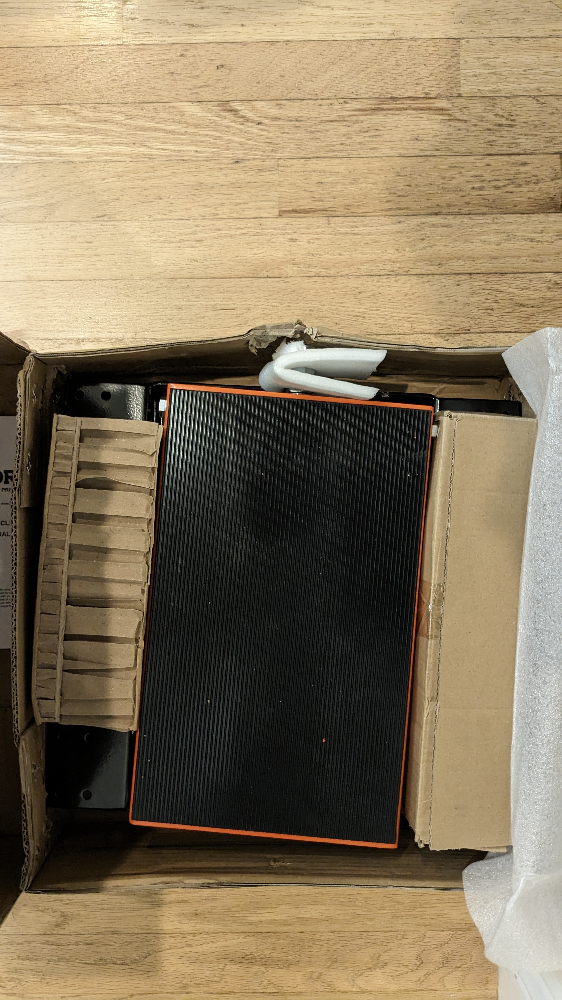
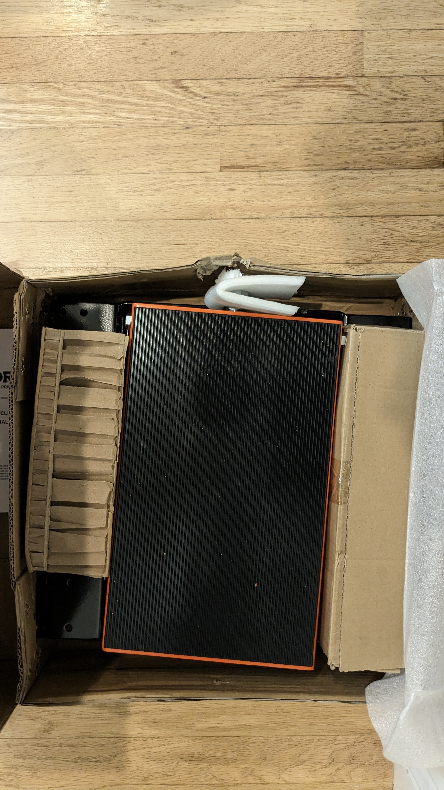
 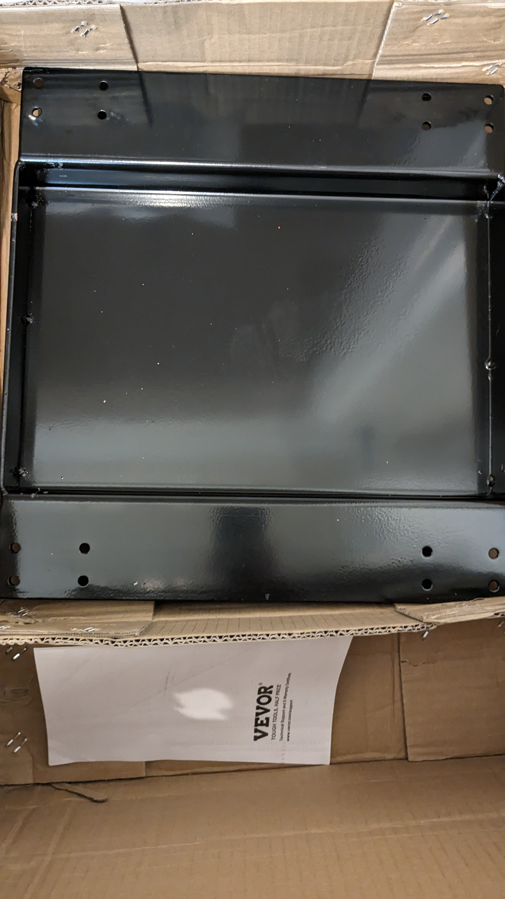
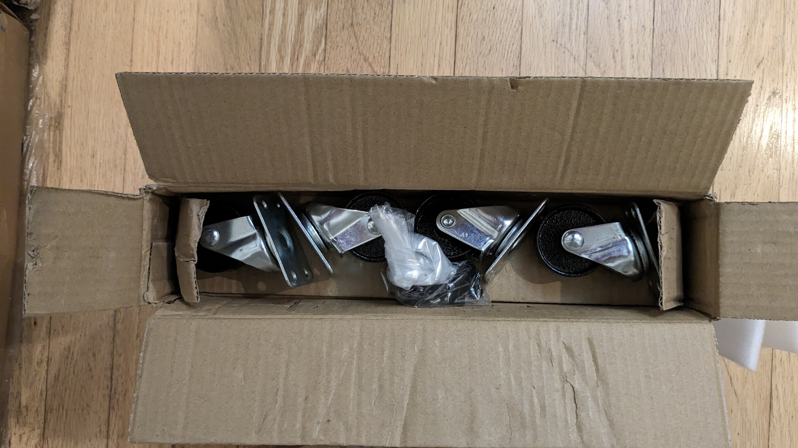
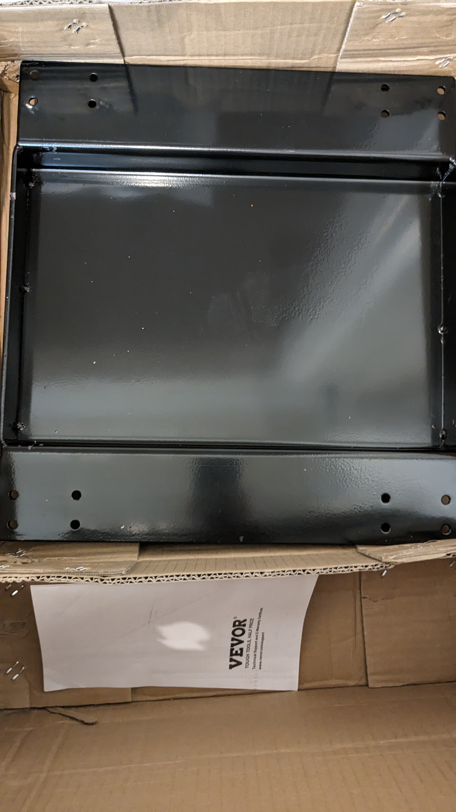
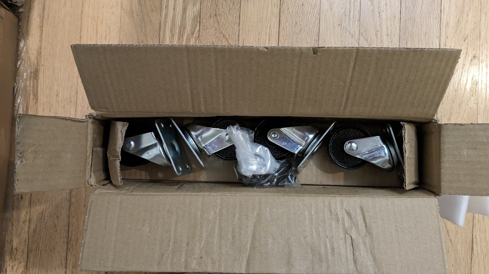